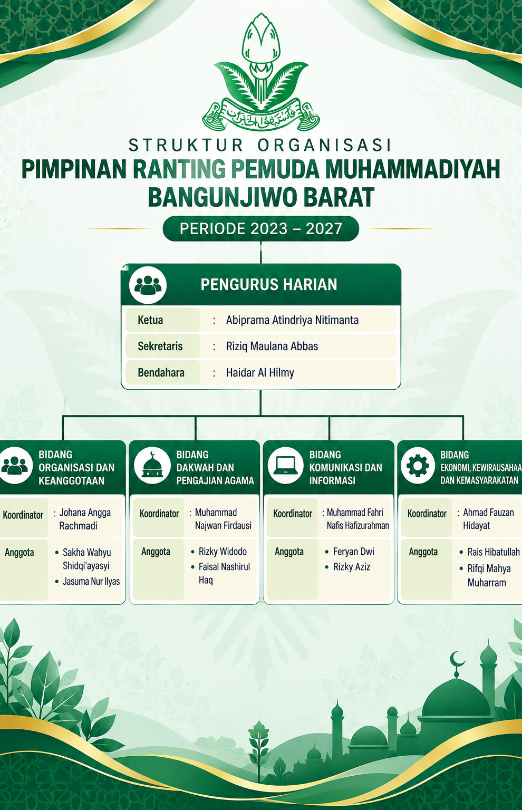
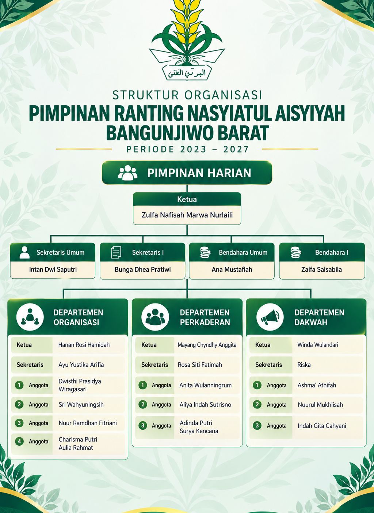

Arsip Resmi & Dokumentasi Ranting
Ortom
Surat 018_Surat Keputusan PRM Bangunjiwo Barat.pdf
Keterangan & Rincian Kegiatan
Informasi Lengkap Ortom
TAPAK SUCI.pdf
SK IPM.pdf
Dokumentasi Visual Asli
Klik foto untuk memperbesar
Galeri Foto & Dokumentasi (4 Foto)
Perbesar

Perbesar
Perbesar

Perbesar
Arsip Dokumen Resmi Persyarikatan
Lampiran Berkas & Dokumen Digital (3 Berkas)
Sumber: Dokumentasi Resmi PRM Bangunjiwo Barat
← Kembali ke Beranda